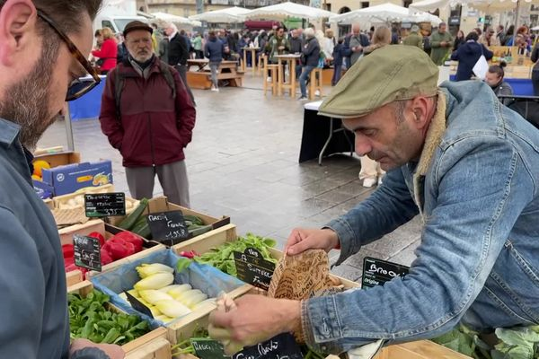

Marseille
Une ville de tourisme
Marseille est la métropole du sud-est de la France et plus encore du bassin méditerranéen. Elle a été fondée vers les 600 avant J.-C. par des marins grecs originaires de Phocée en Asie mineure, ce qui lui vaut aujourd’hui encore l’appellation de "Cité phocéenne".
La ville possède de nombreux atouts : la mer, le soleil, la nature et la culture. Son accessibilité et ses habitants chaleureux sont également des valeurs fortes que Marseille est fière de représenter.
Du Vieux-Port aux Calanques, en passant par la "Bonne Mère", Marseille est un territoire aux paysages variés et surprenants. Les espaces verts et naturels s’étendent à perte de vue autour de la ville. Les traces d’une histoire riche sont omniprésentes à travers l’architecture, la culture et la population. De par son ancienneté, sa culture caractéristique, son identité forte et son brassage ethnique, Marseille est aujourd’hui l’une des villes les plus cosmopolites de France.
Une escale touristique au cœur de la Méditerranée
Marseille est une cité cosmopolite et vivante qui attire chaque année une foule de touristes du monde entier. Classée ville d’art et d’histoire, elle se développe son dynamisme économique et culturel, aujourd’hui en plein essor. Le tourisme et les loisirs constituent un des moteurs essentiels de l'économie marseillaise. Ce secteur génère près de 15 000 emplois à tous les niveaux de qualification.
Avec plus d'1,85 million de passagers, Marseille est le 1er port de croisière de France, 5e port méditérranéen et fait son entrée dans le Top 15 des ports mondiaux .
De nombreux atouts :
- Facile d’accès : aéroport international, aérogare low-cost, TGV, autoroutes…
- Facile à vivre : métro, tramway, bus…
- Facile à aimer : températures clémentes, ensoleillement maximal, beauté des paysages, culture accueillante et chaleureuse.
- Beaucoup à découvrir : des palais, des ruines grecques et romaines, des églises et cathédrales, des châteaux et jardins botaniques…
- De nombreuses activités culturelles : 20 musées, 1 opéra, 42 théâtres, 11 cinémas…
- Un quartier d’affaire en pleine expansion, La Joliette, avec les docks réaménagés, l’élite des entreprises tertiaires et le siège d’Euroméditerranée.
Actualités
Règlements de compte à Marseille : La piste de la transaction de drogue privilégiée après le « canardage » au McDonald’s
Après le carnage survenu dans la soirée de samedi sur le parking d’un McDonald’s dans le 16e arrondissement de Marseille où deux personnes ont été assassinées et trois blessées, Nicolas Bessone, le procureur de la République s’est exprimé ce dimanche.
Le magistrat, nouvellement en poste à Marseille après le départ de Dominique Laurens, a donné quelques détails sur les victimes, rapporte La Provence. Ces derniers venaient du Var voisin. « À ce stade, on ne sait pas avec qui ils avaient rendez-vous même si on peut légitimement penser que depuis Toulon, vous ne vous rendez pas dans le 16e arrondissement de Marseille pour manger chez McDonald’s », a relevé Nicolas Bessone.
Vingt-quatre douilles de calibre 7.62
Dès lors, la police judiciaire planche sur l’hypothèse d’une transaction de drogue qui vire au traquenard. Les trois occupants du véhicule étaient tous connus de la justice et déjà condamnés pour infraction à la législation sur les stupéfiants. Les deux femmes qui les accompagnaient, dont l’une est décédée, n’étaient en revanche pas identifiées jusqu’à présent par les autorités judiciaires.
Le mode opératoire de ce double assassinat a tout de l’authentique « narchomicide ». Le ou les tueurs ont surgi à bord d’un véhicule avant d’ouvrir le feu à l’arme de guerre, vraisemblablement de type Kalachnikov puisque 24 douilles de calibre 7.62 ont été retrouvées sur la scène de crime.
Depuis le début de l’année 48 personnes ont été tuées, et 110 blessées, à Marseille et ses environs immédiats dans des fusillades liées au narcotrafic.
"C'est une première mais ce ne sera pas la dernière" : Un marché de producteurs sur le Vieux-Port
Ce dimanche 12 novembre, un marché alimentaire s'est installé sur le quai du Vieux-Port de Marseille. La ville de Marseille a voulu remettre de la vie en cœur de ville avec ce nouveau rendez-vous dominical.
Des carottes, des citrons, des tomates... mais où sont passés les poissons ? Ce dimanche 13 novembre, des étals de producteurs se sont installés sur le quai du Vieux-Port de Marseille. Un marché alimentaire qui va se pérenniser tous les dimanches matin selon la volonté de la ville.
40 producteurs locaux
Sous l'œil de Notre-Dame-de-la-garde, entourée d'un ciel chargé ce dimanche matin sur le Vieux-Port, les 40 producteurs ont déballé leur marchandise.
"C’est la première fois, mais je me régale", lance cette passante les bras chargés par ses achats du jour.
"Je compte bien faire tout le tour, c'est une première fois mais pas la dernière", s'enthousiasme-t-elle.
Et elle a bien raison, car ce marché, dont c'était le lancement ce week-end va se tenir tous les dimanches matin aux pieds de la Canebière. Une aubaine pour la visibilité de ces producteurs installés aux pieds de la Canebière.
Un lieu central
"L’endroit est idéal, le Vieux-Port est l'endroit stratégique de Marseille, avec tous les touristes, et c'est aussi le rendez-vous des Marseillais", détaille Alain Mandina, producteur.
Tandis que justement les touristes font des photos du marché, les Marseillais eux, remplissent leurs paniers en étant conquis venant même des quatre coins de la ville exprès.
"J’habite au Frioul, donc avoir un marché bio sur le Vieux-Port, c'est du bonheur", se réjouit cette îlienne. À peine installé et déjà validé, "C'est vraiment quelque chose qui manquait, en plus du poisson".
Dynamiser le centre-ville
À l’origine de ce nouveau marché, le maire de Marseille, Benoît Payan, avant de peut-être y faire campagne dans quelque temps, ne boude pas son plaisir ce dimanche matin. Il a le sourire aux lèvres et ne se ménage pas en serrant des mains au détour des étals et en goûtant les produits locaux.
"Vous avez des producteurs derrière nous qui ont des poules dans le 14e arrondissement, des œufs extra-frais, je suis tellement content, on est tellement fiers de cela à côté du marché aux poissons. Refaire de ce lieu un lieu où tout le monde puisse venir", insiste le maire de Marseille.
Le dimanche à Marseille c'est à présent jour de marché, dans la joie et la bonne humeur. Reste aux Marseillais à s'emparer de ce nouveau rendez-vous.